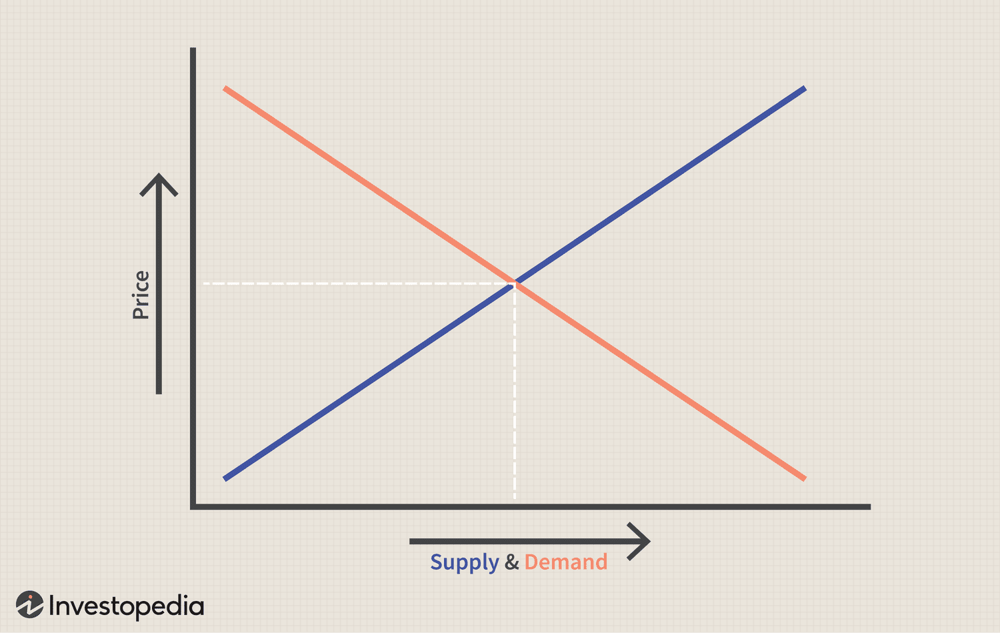

Supply and Demand
Learn about the basic principles of supply and demand, which form the foundation of microeconomics. Explore how the interaction between these forces influences prices and market outcomes.
Learn about the basic principles of supply and demand, which form the foundation of microeconomics. Explore how the interaction between these forces influences prices and market outcomes.
Discover different types of market structures, including perfect competition, monopolies, oligopolies, and monopolistic competition. Understand the role of market structure in determining market outcomes.
Explore the concept of Gross Domestic Product (GDP) and learn how it's used to measure the size and growth of an economy. Understand the components of GDP and the factors that influence its growth.
Learn about inflation, its causes, and its effects on the economy. Understand the different types of inflation and the various measures used to track inflation, such as the Consumer Price Index (CPI) and the Producer Price Index (PPI).

Discover the principle of comparative advantage and how it shapes international trade. Learn about the factors that determine comparative advantage and how countries can benefit from specialization and trade.
Examine the different types of trade barriers, such as tariffs, quotas, and non-tariff barriers. Understand the reasons for implementing trade barriers and their impact on international trade and domestic economies.
Explore the world of heuristics and biases and their role in shaping our economic decisions. Learn how cognitive shortcuts and mental biases can lead to irrational decision-making, and how understanding these biases can improve our decision-making process.
Delve into the concept of nudge theory, which combines insights from psychology and economics to influence decision-making. Learn about the principles of nudge theory and how it can be applied to various areas, such as public policy and marketing.